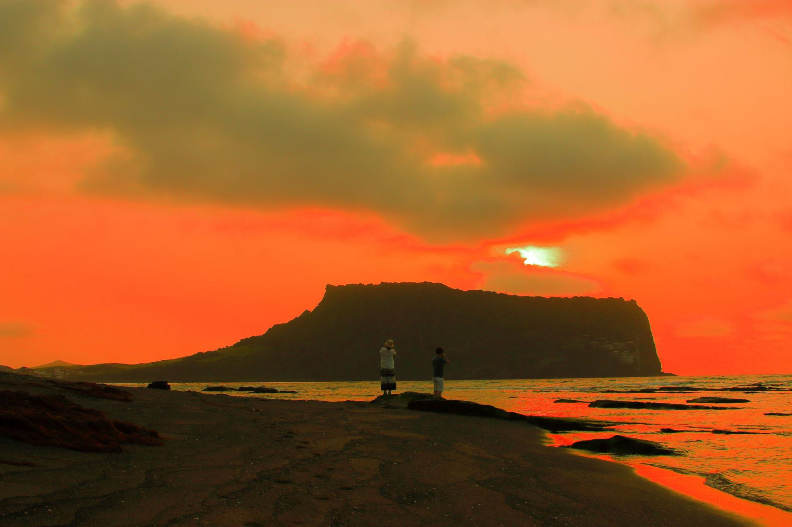

ENFP 추천 여행지
제주도 구좌·성산

추천 이유
ENFP는 새로운 경험과 자유로운 분위기를 사랑하는 성향입니다. 제주도 구좌·성산 지역은 아름다운 자연 풍경과 다양한 체험, 감성적인 카페와 이색적인 원데이 클래스를 함께 즐길 수 있어 ENFP의 모험심과 호기심을 만족시켜 주는 여행지입니다.
추천 여행 코스
- 성산일출봉
- 구좌 해안도로 드라이브
- 당근 케이크 맛집 투어
- 이색 원데이 클래스 체험
추천 포인트
- 제주의 대표 자연경관 감상
- 감성 카페와 베이커리 탐방
- 다양한 체험 프로그램 참여 가능
- 자유롭고 낭만적인 분위기